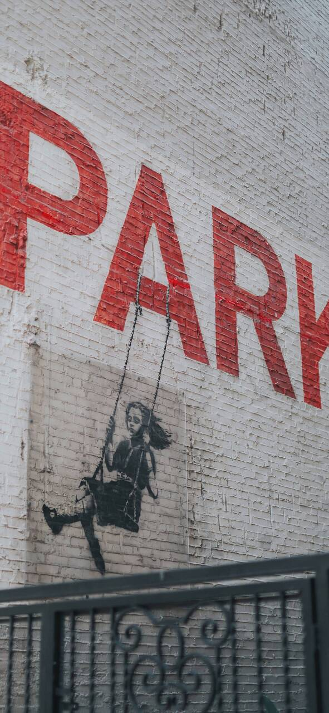
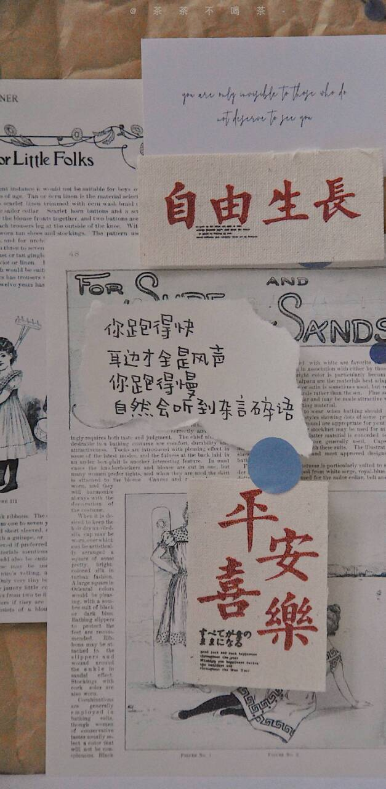
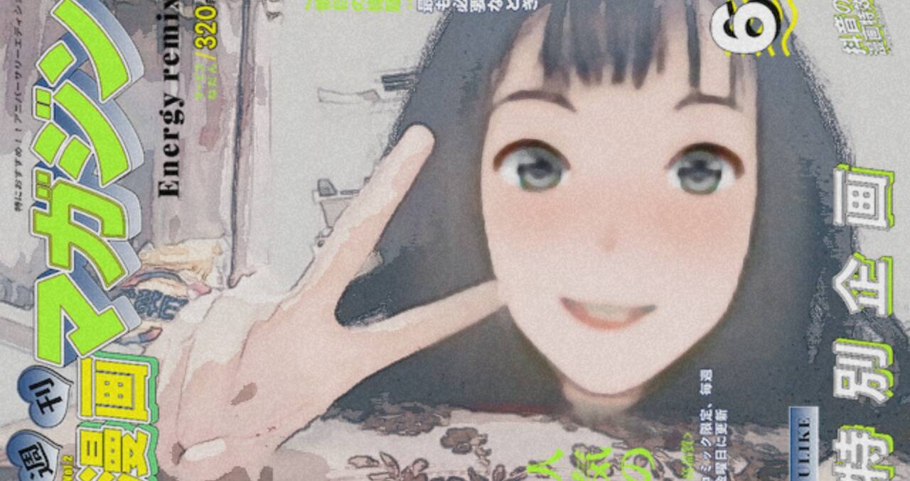

日志随想

写给《饥饿站台》
一、目前我看到的，影片影射了些什么？
1.阶层间资源分配：
高阶层能得到的资源更多，但是很浪费，而随着阶层逐渐往下，资源越来越少，甚至还更会发生，是会而不是可能，人吃人的事。
2.人性：
（ 1）越到疯狂，越到极端的情况下，人的生存本能是会无限爆发的人。
你可以为了活下去 杀了你爱的人，即使你选择了一种你看似更委婉的杀法；你可以为了活下去，亲手割下死人的肉，再喂进自己的嘴里；你可以为了活下去……
（2）母爱的力量。
那个寻找孩子的母亲，只身一人，勇敢踏上那个餐桌，不断往下，寻找她的孩子，即使是这样的处境，母爱，也永远是伟大的。（感觉这点或许有一点偏）
（3）滴水之恩，当涌泉相报。
不知道这一点该不该归于人性，就是男主角在刚开始来到监狱坑时，想要救下小女孩的母亲，那时小女孩的母亲自救成功了。后来男主角被“显而易见”割肉时，小女孩的母亲，来救了他，并且杀了“显而易见”，男主角成功存活。
3.革命斗争：
其实不乏愿意改变现状的英雄。他们愿意牺牲自己，带给底层人员更多食物，更多资源。但这斗争的太难，饥饿的底层人民反对的反而还会更多，因为他们担心自己连仅剩的一点点资源都要被瓜分。
4.信息反馈：
有时候，以一种更合理的方式，来进行改变，说不定效果会更好。比如，向管理层传递信息，让他们改变机制，改变资源分配的机制，前提是我们要有这种自发性的进行信息传递的觉悟与行动。
二、疑问
为什么那个带狗的女人，要骗男主说，那个找小女孩的女人根本就没有小孩？
为什么管家会拿着奶冻比对头发？是映射那条信息？还是映射信息反馈的错误性？
为什么小女孩是信息？
结尾是小女孩上去了，但没有睁开眼睛，这点有什么深意？
电影结束了，后面管理者如何行动，就看我们的社会了……

睡前随笔
现在太晚，大脑已经无法思考。仅能写下只字片语。
JAN的视频，走遍山河，世间还有很多美景值得去走走。大西北，重庆，都行。
有的人可能一生就只会待在一个地方，但也有的人会走过无数地方，看遍万千风景
《月亮与六便士》
起初平淡无奇，中间觉得思特里克兰德简直过分，某种程度上诱惑了救了自己命的“朋友”的妻子，最后女人选择自杀，家庭彻底毁灭。但到后面，你反而在思特里克兰德死后，别人对他人生的最后阶段的描述里，偏执的转换起了角度，钦佩起了他来。
为了画画，四十多岁离开了舒适的家，只身前往法国，一度穷困潦倒。恐怕开始画画后，最美好的日子就是和爱塔生活那里吧。有贤惠的妻子在，有可爱的娃娃在，有美好的房子和自己画画的场所在……
很多出现不那么多的角色也有自己的幸福，虚荣心，伤心……之处。
我太困了，真的无法支撑大脑写下去了
晚安

写给《只有芸知道》
这几天一直被困在家里面。连续很长时间了，心情一直很浮躁。某些该做的事情也拖着不去，懒懒散散度日……
还是浮躁了，自控力不够了……
电影一开篇，那个身着红色裙子赤着脚的芸，好美。随后知道，那不过是幻象，是东风的思念。
电影几乎处处皆美景，Clyde的美，是纯净无暇的美，那棵陪伴着芸，布鲁的树也尤其的美。
“风云际会”的情感也太过动人。
相濡以沫用于描述恰到好处，心心念念的只是对方。电影中我很喜欢的一个角色，是美琳达，她幽默大方，外向美丽，很自由也很善良，她四处游走到处支教。她就像一朵云一样。也是芸十分向往的那种云。芸也渴求生活的变化，许下了那个让店毁灭的愿望以求的得改变……
“半路留下来的那个人，苦啊……”
最后的最后，风留下来了，重新养了一条布鲁，在那棵树下，搭了一把天蓝色长椅，重新拾起了笛子，收到了来自芸的信……
舒缓平静，爱情依旧很美……